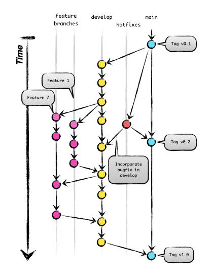

Contributing Guide¶
windIO was started under IEA Wind Task 37 and has been additionally supported by IEA Wind Task 55 as well as other community-based groups, research organization, and private companies. Being a collaborative effort, it is important to establish a common understanding of the rules, responsibilities, and expectations from all stakeholders. This document outlines the processes and guidelines for contributing to windIO.
The windIO repository includes JSON schemas, YAML files that describe wind energy systems conforming to the schemas, Python code for working with the schemas and input files, source files for web-based documentation, and various other files that serve as infrastructure. Changes to anything that is tracked with git in the windIO repository is considered a contribution, and these guidelines apply.
Code of Conduct¶
As members of the wind energy community, we all agree that the advancement of wind energy technologies is critical for the sustainability of our planet. This shared goal should be reflected in our interactions with each other. Remember that we’re all on the same team despite differences in our day to day stressors and needs.
Two principles should guide our conduct:
Git Flow¶
Contributions are tracked with git and coordinated with GitHub.
In general, the git-flow model is used to navigate parallel development efforts. Here’s a brief summary:
Day to day work happens on feature branches on the principle repository or forks. The feature branches may be unstable, and there’s no expectation that they are complete. These branches should have a simple name that is indicative of the scope of the work.
The develop branch absorbs feature branches when they are complete through pull requests. This branch is somewhat stable, but not yet ready to let loose for the general users.
The main branch is the most stable and tested with the lowest frequency of changes. It should always represent the “released” version of windIO.
The diagram below illustrates this flow with the main branch on the right, the develop and feature branches coming from main, and ultimately all merging back into main for a tagged release. Most often, feature branches are merged into develop, and less frequently develop is merged into main. The exception is when fixing a major bug in which case a bug-fix branch is merged directly into main, and then main is merged back into develop. The git history should be synced to GitHub frequently, and coordination across branches should happen there.
{kind=link}

Roles, Responsibilities and Expectations¶
The collaborative development process involves various people with distinct roles, and a single person may participate as multiple roles. In the context of windIO, the following are identified:
Contributor: Adds to or modifies content in the windIO repository.
Reviewer: Reviews and critiques contributions by developers.
Maintainer: Manages the repository by supporting the review process, managing issues, and generally ensuring the quality of the repository.
All roles are required to work together in the development of windIO, and authorship of a change is given to contributors, reviewers, and maintainers.
Contributor Responsibilities¶
Contributors are responsible for communicating their intention to make a change to the rest of the community of stakeholders. A change should be proposed through a GitHub Issue or Discussion, and relevant people should be tagged directly for feedback. After accepting feedback and updating the proposal, the contributor is responsible for implementing the change and submitting a pull request.
A pull request is owned by the contributor. It is their responsibility to fully describe the change, the motivation behind it, and the impact on windIO and the adjacent ecosystem.
Reviewer Responsibilities¶
Reviewers are responsible for providing feedback on the pull request. Approving a change indicates agreement with the change, and it implies that they will accept responsibility for the consequences of the change.
At this point, it is the responsibility of reviewers and maintainers to evaluate the proposed change and provide feedback.
After a pull request is submitted, maintainers should ensure the following: - An appropriate reviewer is listed - Conflicting works in progress are flagged - A tentative timeline for review, design iteration, and merge is established